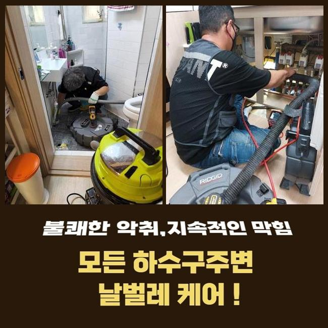
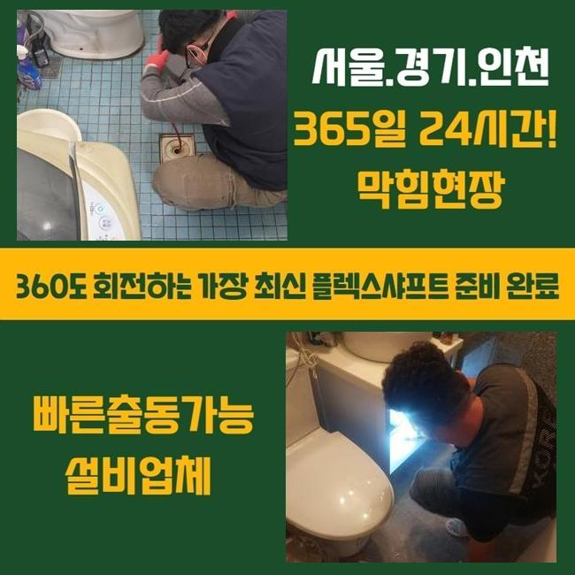
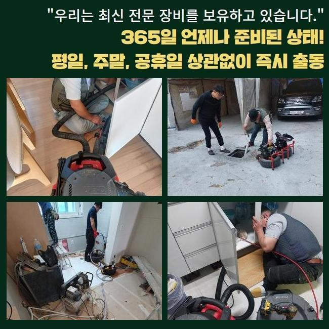
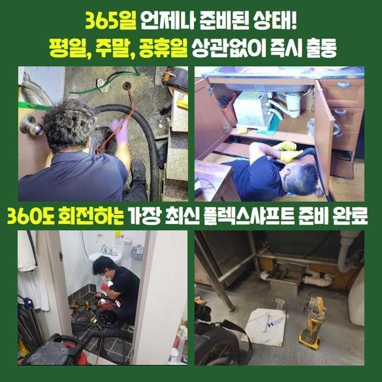
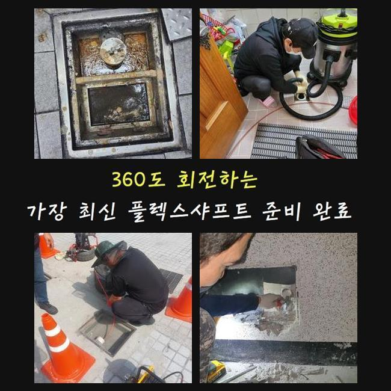
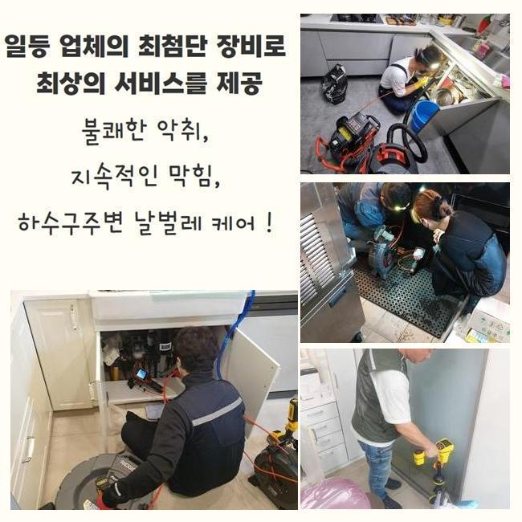

🏠 세마동하수도역류 가수동 오수맨홀청소 설비공사
서울 구로구 하수구막힘 전문 시공 후기

📋 작업 개요
- 위치: 서울 구로구, 구로구, 서울
- 서비스 유형: 하수구막힘, 배관막힘, 맨홀막힘, 역류해결, 뚫는업체, 배관청소, 고압세척, 설비공사
- 작업 일시: 2025. 1. 25. 18:02
- 업체명: 하수구수사대 (010-5615-2118)
🔍 문제 상황
세마동하수도역류 가수동 오수맨홀청소 설비공사
근처의 건물에서 배수 성능의 불통때문에 운영이 힘든 상태라고 조속히 고쳐주면 좋겠다는 의뢰 내역을 접수했어요
식당 건물이라면 하수구가 가로막히는 문제점으로 인해 수도시설을 운용하지 못하므로 당장 요리부터 못하니 문을 닫아야만 합니다
하수구 통수를 내줘야 영업불가로 인한 피해를 감축할 수 있기 때문에 현장을 빠르게 찾아서 고쳐드리기로 했습니다
저희가 가자마자 고객님은 주방 밑의 배수구가 막힌건지 물도 허술하게 내려가고 깊숙하게 자리해 있는 하수구로부터 물이 범람하는 일도 더해진 상황이라고 하셨어요
이런 케이스라면 부엌 부근의 배수구도 고쳐드리고 야외 시설물도 손봐드릴 필요가 있었기에 복잡한 단계로 나눠지는 시공건이 될 듯 했습니다
계획적인 접근을 위하여 설비의 노후도나 오염도 등을 모아서 생각해보고 이번 업무의 소요시간을 계산해서 원하시면 알려드립니다
관로가 접해있는 부분이 많다면 데미지를 크게 입은 곳이라면 결점없이 개선하고자 한다면 시간이 더 필요할 때가 있습니다
야외에 설치된 하수구 속을 바라봤더니 맨홀부터 녹이 일어나 있는 상태였고 주변부의 바닥까지 심히 젖어있다보니 정돈되지 않은 상태였습니다
작업 중의 결함이 일어나지 않게끔 조심스러운 태도로 업무에 들어가려고 생각하고 관로를 보기 시작했습니다

🔎 원인 분석
💡 전문가 진단: 정밀 진단 장비를 사용하여 슬러지의 고착 여부를 판명하고 타격/세척 작업을 실시했습니다.
가볍게만 보아도 지저분한 오물들이 눈에 들어왔습니다
똘똘 집합한 슬러지가 두둥실 여기저기 접착되어 있는 것을 즉각 눈치챌 수 있는 상황이었으므로 노출되는 지점의 세정에 시행해야 할 것 같았네요
가까운 쪽의 배수로를 우선 작업에 들어간 다음 관로를 보여주는 내시경 기기를 밀어넣어서 상황을 봅니다
크고 작은 관로들이 어떻게 이어져 있는지 분석한 다음엔 고압수를 쏴서 강력하게 흡착되어 있는 슬러지부터 떼기로 정하게 되었습니다
초반 청소가 안되면 카메라를 돌려봐도 선명한 내면을 살펴보기 힘들 듯 해서 석션기로 잔수를 흡입하는 작업을 우선실시해야 했어요
석션장비는 청소기같이 생긴 장치인데 찰랑거리는 하수와 침전물들을 철저히 당기면서 없애버리는 역할을 담당하는데요
흡수력이 뛰어나다보니 유동성이 있는 대상물은 가볍게 기다란 석션 속으로 모두 모입니다
끈적이는 물질이나 견고하게 접착된 접착물질은 없애기 힘들어서 석션기의 가동만으로는 하수구를 완전히 관통시키는 확률이 떨어집니다
시공 초반과 말미에 늘상 이 석션기를 꼭 가동하고 있을 정도로 배관의 말끔한 세척을 위해서는 반드시 최소 한번은 작업 중에 쓴답니다
석션기로 내부를 가볍게 치워준 다음에 배관 검토 카메라를 진입시켰습니다
이 내시경기기 덕분에 구불구불한 형태로 독특하게 배치된 배수관일지언정 구석구석 관찰하면서 막힌 쪽과 오염의 정도에 대해서 관측할 수 있어요

🔧 작업 과정
이렇게 관찰을 거쳐봤더니 뭉쳐있는 이물질 덩어리와 유막이 많은 상태였습니다
결과를 내보면 이것들이 위급한 연락을 주신 식당의 주범일 것 같다는 예측이 되더군요
조리하다가 바닥 배관으로 새어나간 기름 성분이 점점 몸체를 불려나갔고 접착되어 액상인 수돗물 마저 내려갈 곳을 상실하게 되고 이물질과 하수가 더 누적되면서 그나마 뚫린 위로 솟구친 것입니다
스케일링 및 석션작업으로 안을 정리를 해주면서 관로들이 연결되는 야외 쪽의 하수구도 청결관리를 해드릴 필요성이 있었어요
샤프트는 스케일링 기기이며 헤드에 갈고리 형식의 노커가 자리하고 있습니다
앞선 석션으로도 여전히 남은 덩어리진 노폐물이라거나 배관과 혼연일체가 된 오물을 살살 긁어서 빼거나 작은 입자로 분해할 수 있습니다
앞서 사용한 샤프트와 석션 배관 내 카메라까지 전부 필요에 따라 활용해야 작업이 안정적으로 완성되며 올스탑이 되어버린 배관 경로를 확보할 수 있습니다
배관 특성을 알아봤더니 관로가 큰 편에 많이 지저분하여 고압수를 쏘는 활동도 필요할 것 같았습니다
흡입하고 긁어주는 작업으로 하수의 이동성이 제법 관통됐음이 목격돼서 하수구 고압수 청소기계를 넣어서 맑은 관로로 조성했습니다
높은 압력으로 응축된 물줄기를 시원스럽게 발사하는 장비 몸체 위치를 설정해서 막힘 정도가 가장 심한 섹션을 매끈하게 만들어나갔습니다
꼼꼼하게 고압수를 쏘고나니 결국 통수불능을 야기했었던 기름 슬러지가 말끔하게 소멸했습니다!
작업 전 카메라로 관로의 형상과 심각도를 관심있게 조사해보고 다양한 스킬을 통한 배관청소를 통수를 방해하던 장애물들을 제거하는 이번 작업에 좋은 결과를 만들어냈습니다
시공을 완전히 끝내고 개선된 내부 모습을 보니 전이랑은 딴판으로 지저분한 찌꺼기 덩어리 하나도 사라졌었고 오염됐던 내부 벽면도 오물을 벗겨내서 배관이 더 깔끔해진 것을 드디어 목격하게 됐습니다
배수로 안에 뿌옇게 차있었던 물기도 모두 없어지고 노즐에 붙어나오던 더러운 찌꺼기가 해소되었습니다
아무래도 레스토랑이나 식당은는 수돗물을 쓰는 양이 기본적으로 대폭 증가하기 때문에 그렇다보니 하수관이 고장날 상황이 자주 재발됩니다!
잘게 썰린 음식물이나 미처 닦아내지 못한 기름기가 배관 속에 유입되지 않도록 평상시에 업무하실 때 조심해주셔야 할 부분이 있습니다
하수구가 깨끗해진 걸 확인했다면 물의 폐기 과정을 확인하면서 시공이 원만하게 끝이 났는지 더블체크를 해보게 됩니다


✅ 작업 완료
집 안에서 물기를 쏟아준 다음에 고압세척 작업을 한 외부하수구까지 중단되는 텀이 없이 정상적으로 빠져나가는가를 예리하게 관찰하는 단계입니다
통수검사를 위해 부은 물이 옥외 관로로 속속들이 모여드는 게 직접 확인하게 되었습니다
하수구 기능을 되돌려드리고 질의응답이 있다면 친절하게 받고 고객님 댁에서 나왔습니다
하수구가 봉인되어 버리면 비용을 절약하려는 일념으로 뚫어뻥 등을 휘두르시다가 오염원이 더 집적될 수 있습니다
하수구 하자가 생겼음을 알려주시면 계신 곳으로 빠르게 가서 막힘이 나타난 사유를 파악 후에 청소하니 이 점 참고해주시면 감사드리겠습니다



⚠️ 하수구 배관 막힘 예방 및 관리 가이드
- ✅ 머리카락, 비닐, 물티슈 등 물에 분해되지 않는 이물질은 하수구 유입을 절대 금지해 주세요.
- ✅ 하수구 거름망을 씌우고 모여진 이물질은 주기적으로 쓰레기통에 바로 비워주셔야 합니다.
- ✅ 배관 노후가 심할 경우 이물질이 더 쉽게 걸리므로 주기적인 배관 세척(고압세척 등)을 권장합니다.
- ✅ 작업 후 1년 이내 재발 시 하수구수사대에서 무상 A/S 보증 서비스를 제공합니다.
💡 핵심 정리
- 확실한 장비 작업(내시경 점검 및 샤프트 스케일링)으로 원인을 뿌리 뽑습니다.
- 작업 후 1년 이내에 동일한 부위 재발 시 100% 무상 A/S 서비스를 보장합니다.
- 서울 · 경기 · 인천 전 지역에 24시간 언제든 긴급 출동할 수 있도록 항시 대기 중입니다.
❓ 자주 묻는 질문 (FAQ)
🚨 서울 구로구 하수구막힘 문제로 고민이신가요?
정확한 원인 진단과 확실한 시공으로 재발 없는 해결을 약속드립니다.
24시간 긴급 출동 | 서울 · 경기 · 인천 전지역 | 1년 내 재발 시 무상 A/S